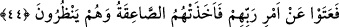
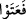

ve ondan sonraki gün de siyah renge dönüşecek. Daha sonra sabahleyin azab sizi
yakalayacak” demiş, dediği gibi de vukû bulmuştur. Gerçekten onların yüzleri zikredilen
renklere dönüşmüştür. Çünkü onlar her geçen gün kötülüklerini artırmışlardır. Şüphesiz
ki onların beyaz olan yüzleri önce sarı, sonra kırmızı, daha sonra siyaha dönüşmüştür.
Siyah renk Allah Teala’nın celâl ve kahır renklerinden olup cehennem de aynı rengi
taşımaktadır. Çünkü cehennem zifiri karanlıktır. Sâlih (a.s.)’ın kavmi helâk olurken
siyah renge dönüşmüş, kömür gibi olmuş, cehennemin rengine bürünmüşlerdir.
Varacakları yer de kendi renklerinde olan cehennemdir. Biz cehennemden Allah’a
sığınırız.
44. Rablerinin emrine karşı geldiler. Bu yüzden, bakıp dururlarken onları yıldırım
çarpıverdi.
“Rablerinin emrine karşı geldiler.” Yâni O’nun buyruğuna sarılmaya karşı
büyüklenerek imtinâ ettiler. Yaratıcılarının fermanını dinlemediler, kendi işlerini yerine
getirmekle meşgul oldular.
Atâ fiilinin masdarları utuvven, utiyyen, itiyyen’dir. Mânâsı ise “kibirlenip haddi aştı”
demektir. İsm-i fâili “âtin”dir.
Semûd kavminin emrolunduğu şey, Sâlih (a.s.)’ın lisanıyla Allah’ın onlardan istediği
sadece kendisine kulluk etmeleri (bk. Hud 11/61) ve deveyi kesmeyip otlaması için
kendi hâline bırakmalarıdır (bk. Hud 11/64). Onlar, bu emirlere karşı çıkmışlardır. Veya
onlar Allah’ın dînine karşı çıkmışlar, ona uymakta büyüklenmişlerdir. Yahut da onların
büyüklenmeleri ve haddi aşmalarının sebebi, Allah’ın onlara bildirdiği emirleri
olmuştur. Sanki Allah onlara sadece kendine kulluk etmelerini ve deveyi kendi hâline
bırakmalarını emretmiş ve işte bu emirler, onların haddi aşmalarının sebebi olmuştur.
Bahru’l-ulûm isimli eserde bu husus bu şekilde açıklanmıştır.__WORD__ (fe’atev) fiilindeki fâ harfi, önceki âyetteki “onlara denildi ki…” cümlesine atıf
için getirilmemiştir. Çünkü haddi aşma, nimetlerle faydalanmadan sonra değil, önce
vukû bulmuştur. Dolayısıyla buradaki fâ harfi, önceki âyetin özet olarak verilen
muhtevâsını tefsîr ve tafsîl etmek için getirilmiştir. Gerçekten de önceki âyette Allah
Teâlâ Sâlih (a.s.)’ın kavminde de ibretler bıraktığını haber vermiş, bu âyette ise
bahsedilen ibretlerin sebeb ve tafsilâtına geçilmiştir.
Şerhu’r-Rızâ’da müellif şöyle demiştir: Cümleleri birbirine atfeden fâ harfi, bazen
kendisinden sonra gelecek kısmın, sözkonusu edilme bakımından makablindekiler
üzerine bina edilen bir kelam olduğunu ifâde eder. Bununla beraber, kendinden sonraki
cümlenin içeriğinin öncesindeki cümlenin muhtevâsıyla zaman bakımından aynı veya
peş peşe olmasını gerektirmez.